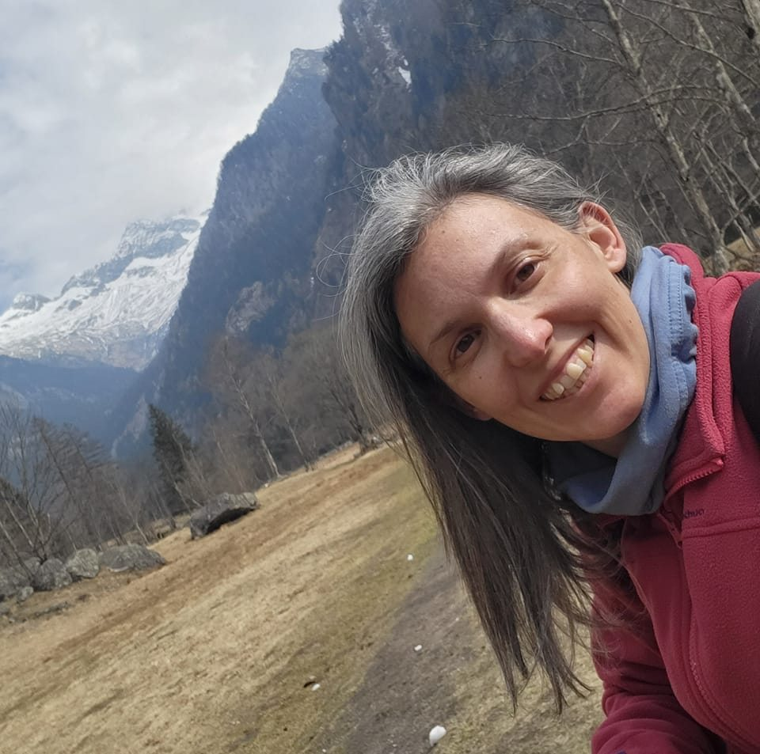

I have been a web developer for about 10 years from 2001 to 2012. I worked in the north of Italy as an employee for three small companies.
Then, I had two children, we moved to London (UK), we had another child and I focused on my growing family and volounteering my knowledge in information technologies with charities around my area; especially with the local school and PTA.
My passion for information technology and for web design and development never stopped so, in 2023, I have decided to return to my laptop and re-start what I left behind all those years ago.
The course I found, is a comprehensive beginner course for Web Developer. I have chosen this course because I want to refresh my memory on the languages I already know (HTML, CSS, JAVASCRIPT, JAVA) and I am curious to learn about the tools and languages available now.
My goal is to be able to write a modern website/app to add to my portfolio and, in the near future, restart my career as web developer.
12 weeks online course c/o Udemy.com
Nov 2023 - now
3 days intensive course c/o Web Studio - Pisa - Italy
Apr 2002
3 months course and 1 month internship as web designer c/o INTRED S.p.A. - Villa Carcina (BS) - Italy
Sept 2001 - Jan 2002
INSTITUTE OF HIGHER SECONDARY EDUCATION - "Primo Levi" - Sarezzo (BS) - Italy
Sept 1996 - Jul 2001
In the last few years, I have helped a few charities with their website.
Web designer and web developer. From analysis to page flows and web development of websites and web apps for clients
Web designer and developer in team with a PHP programmer.
Junior web designer/developer.